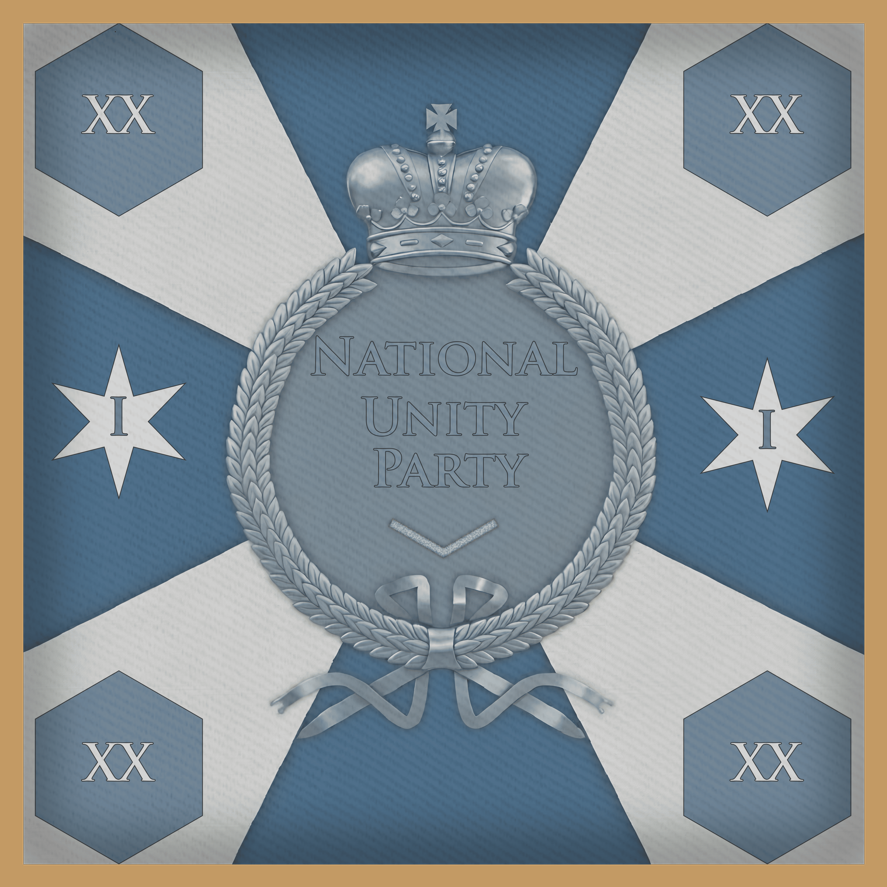
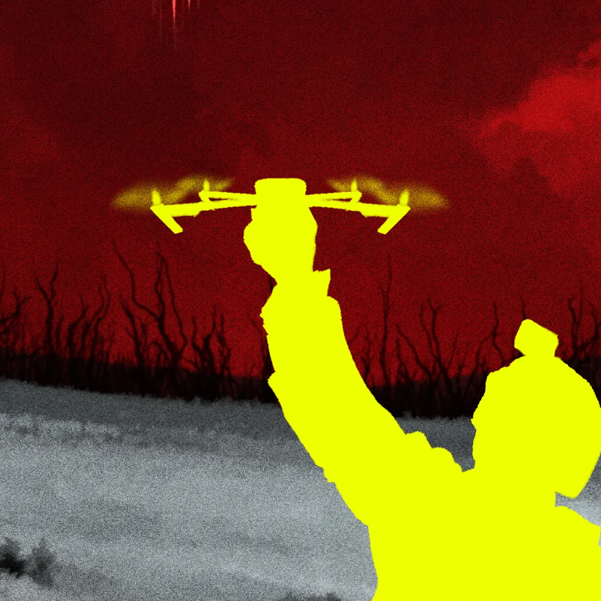
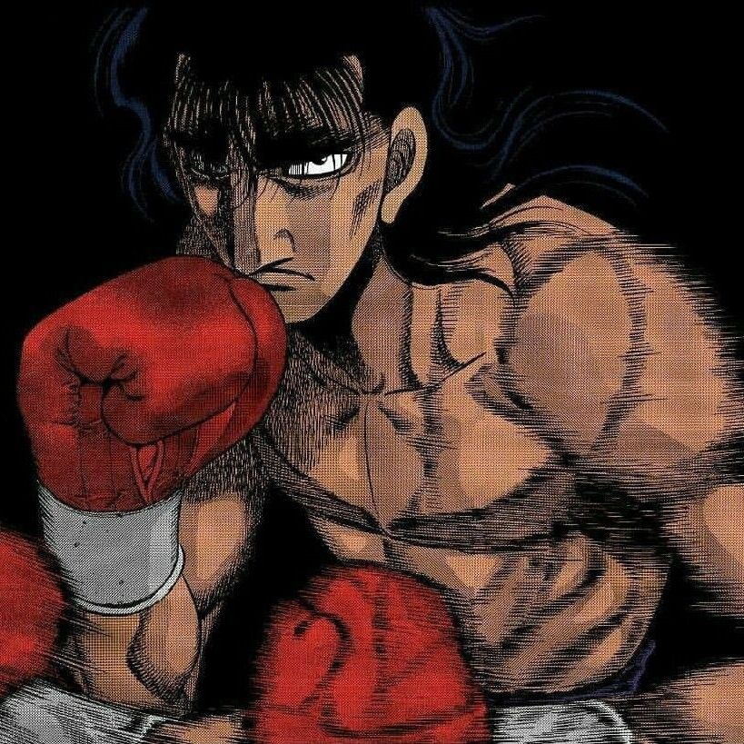
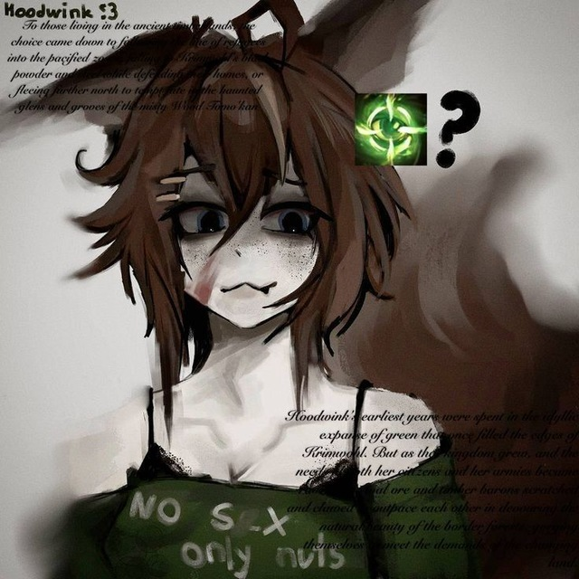

✦ Республика Мальдения ✦
Государство, построенное на принципах национального единства и преданности Партии. Мы — народ, объединённый общей судьбой и готовый защищать свои идеалы.
Идеология и форма правления
Идеология
Национал-социализм — государственная идеология, утверждающая приоритет нации, единство народа и дисциплину как основу могущества государства. В основе — идеи национального возрождения, социальной справедливости и сильной централизованной власти.
Форма правления
Диктатура — власть сосредоточена в руках Президента, избираемого пожизненно Съездом Партии национального единства. Верховный канцлер обеспечивает непрерывность управления, а Партия контролирует все сферы жизни общества.
Символы государства
Флаг
Квадратное полотнище золотисто-оливкового цвета с золотой каймой. В центре чёрный прямой крест, в каждом из четырёх полей которого размещён белый квадрат с красной зубчатой диагональной перевязью.
Герб
Чёрный двуглавый орёл с золотыми клювами, лапами и красными языками. В правой лапе — серебряный меч с золотым эфесом, в левой — золотой сноп пшеницы.
Гимн
«Вперёд, Мальдения!» — песнь о верности Родине и Партии.
✦ Конституция Республики Мальдения ✦
Принята Съездом Партии национального единства Мальдении. Мальденский народ, объединённый вокруг идей национального единства, порядка и дисциплины, под руководством Партии национального единства Мальдении, провозглашает настоящую Конституцию основным законом государства.
✦ Партия национального единства ✦
В стране введена однопартийная система. ПНЕМ — единственная законная политическая сила.

Партия Национального Единства Мальдении ПНЕМ
Единственная законная политическая сила
Партия национального единства Мальдении (ПНЕМ) является единственной законной политической партией Республики Мальдения и, согласно конституции государства, играет руководящую роль в управлении страной, формируя правительство и определяя основные направления внутренней и внешней политики.
Бразил ПНЕМ
Президент
brazil1809
Член партии
Глава государства, верховный главнокомандующий, гарант Конституции.
Путь от окопного солдата до правителя. Авторитет в армии непререкаем, законы священны. Помнит каждого, кто стоял рядом, и не прощает предательства. ВЛАСТЬ ПРЕЗИДЕНТА — ЭТО ПОРЯДОК НАЦИИ! ПОРЯДОК ВОСТОРЖЕСТВУЕТ СТАЛЬЮ!

idfc v. ПНЕМ
Премьер-министр
vereskkk
Член партии
Руководство Правительством, исполнение законов, контроль над государственным аппаратом.
Премьер-Министр, Министр Обороны Мальдении. Построил безупречную карьеру от простого рядового до высшего звания, которого мог достичь служащий человек. Пользуется поддержкой среди армии благодаря своим качествам справедливости и честности.

zqwer ПНЕМ
Верховный канцлер
oppora
Член партии
Обеспечение непрерывности государственного управления, контроль за законностью решений.
Бывший вождь Герцогства Антерии и Король Эркея. Прошёл несколько войн, получил звание Героя Республики и орден Железного меча. Состоит в Партии национального единства Мальдении.

Jasō #gentoo ПНЕМ
Председатель партии
gadza0
Член партии
Руководство ПНЕМ, развитие вычислительной техники и техническая модернизация Мальдении.
Архитектор цифровой инфраструктуры Мальдении. Отвечаю за разработку государственных информационных систем, связь и техническую модернизацию. emerge -uD @world
✦ Государственные службы ✦
Обеспечение безопасности, правопорядка и обороноспособности Республики Мальдения

Республиканская Армия Мальдении
Вооружённые Силы
Обеспечение безопасности государственного строя, народа и границ, защита суверенитета и национальных интересов.
Министерству обороны.

Национальная Полиция Мальдении
Правоохранительный орган
Обеспечение общественной безопасности, защита жизни и здоровья граждан, пресечение преступности, охрана правопорядка.
Министерству внутренних дел.